📍 오시는 길Getting Here
주소Address
지하철역에서 걸어오기Walking from the subway
투썸플레이스에서 오른쪽 → 쭉 직진 (오른쪽 이마트24, 왼쪽 롯데마트) → 짧은 오르막 → 회색 건물을 오른쪽에 두고 우회전Right at A Twosome Place → straight on (emart24 on your right, Lotte Mart on your left) → short uphill → turn right with the gray building on your right
도보 약 6분about 6 min walk엘리베이터로 지상 → 초등학교 담장을 왼쪽에 두고 직진 → 오른쪽 횡단보도(올리브영 방향) → CU, 꽃집을 지나 → 삼거리에서 우회전 → 회색 건물을 보며 좌회전Elevator up → straight with the school wall on your left → cross at the right-hand crosswalk (toward Olive Young) → past CU and a flower shop → right at the three-way junction → left at the gray building
도보 약 7분about 7 min walk빨간 별이 그려진 건물이 다올스테이예요. 짐이 많으면 두 역 모두 엘리베이터를 이용하세요.Look for the building marked with a red star. Both stations have elevators if you have heavy luggage.
건물 안으로 들어오기Getting inside
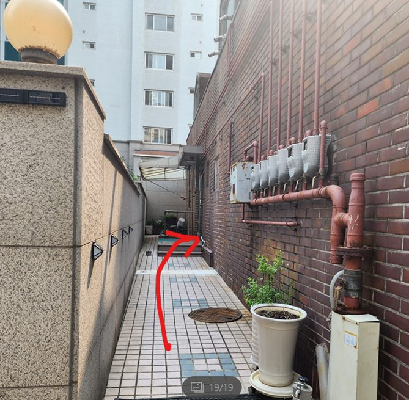
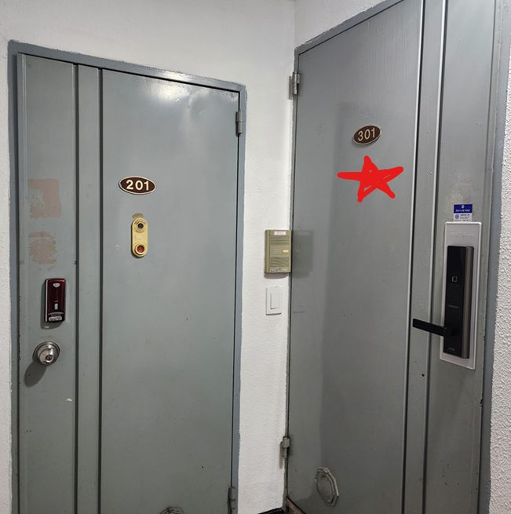
- 사진 속 복도를 따라 건물 로비로 들어와요.Follow the corridor in the photo to the building lobby.
- 로비는 2층부터 시작해요. 301호로 올라오세요. 숙소는 3층과 4층을 함께 써요.The lobby starts on the 2nd floor. Come up to Room 301; your home spans the 3rd and 4th floors.
- 현관 도어락에 비밀번호를 입력하세요.Enter the code on the door lock.
♥ 체크인하신 뒤에 메시지 한 번 남겨 주세요.♥ After you check in, please leave us a message.
주차Parking
건물 안에는 주차할 수 없어요. 도보 5분 거리에 유료 주차장이 있으니 필요하면 미리 메시지로 문의해 주세요.There’s no parking in the building. A paid lot is about a 5-minute walk away; message us ahead if you need it.
📶 Wi-Fi
5G가 더 빠르고, 벽이 많은 곳에서는 2.4G가 더 잘 잡혀요. 아래 QR코드로도 연결할 수 있어요.5G is faster; 2.4G reaches better through walls. You can also connect with the QR code below.
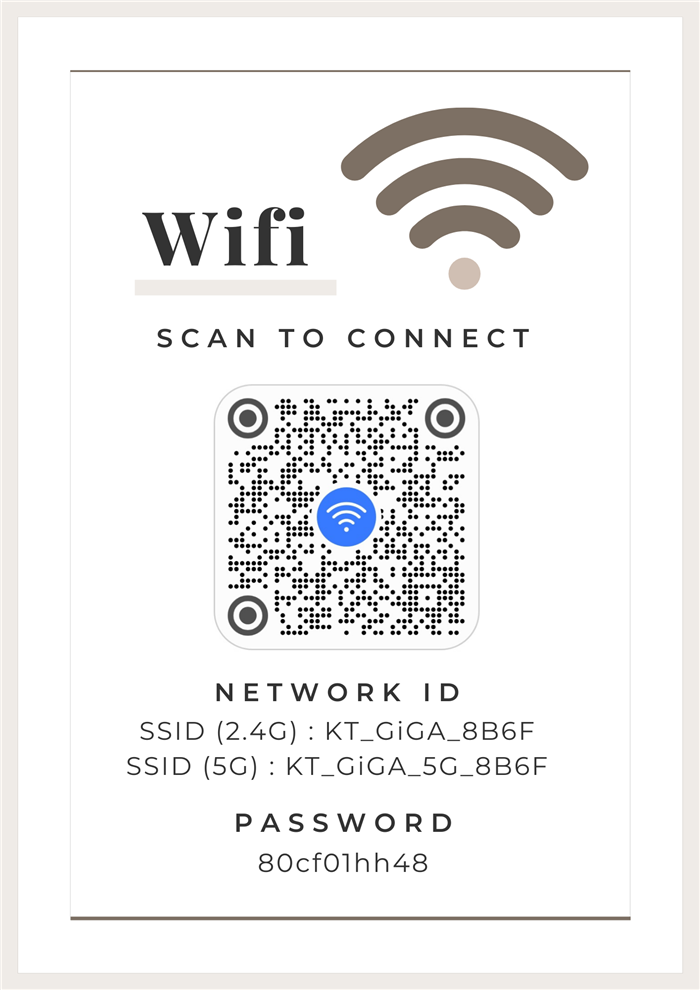
🎛️ 가전 사용법Appliances
사진을 누르면 크게 볼 수 있어요.Tap a photo to enlarge it.
❄️ 에어컨Air conditioner
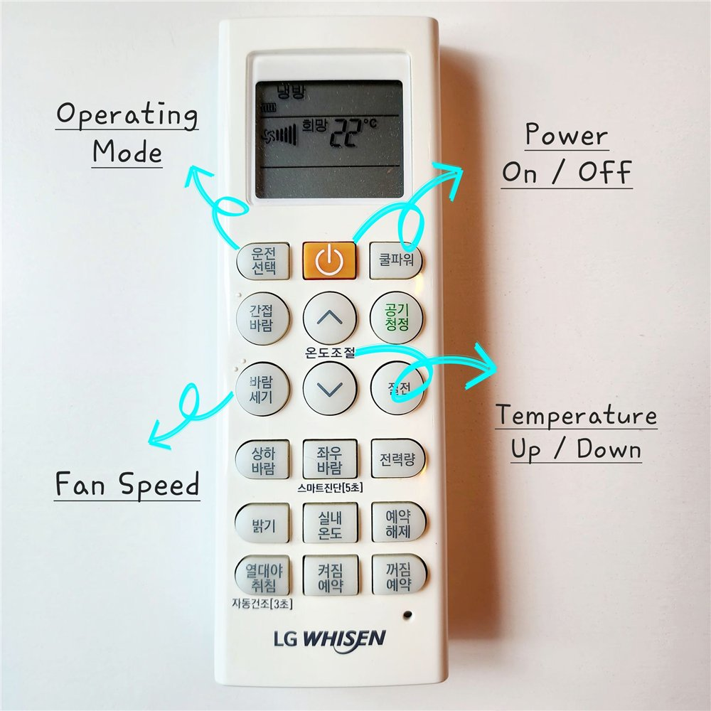
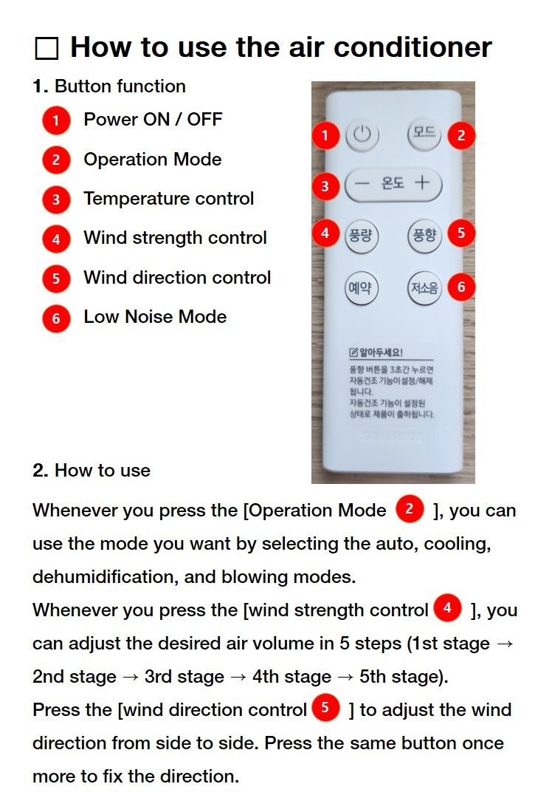
- 리모컨의 전원 버튼으로 켜고 끄고, 운전 선택으로 냉방·제습·송풍을 바꿔요.Use Power to turn it on or off, and Operating Mode to switch between cooling, dehumidifying and fan.
- ▲▼ 버튼으로 온도를, 바람 세기 버튼으로 풍량을 조절해요.Set the temperature with ▲▼ and airflow with Fan Speed.
- 외출할 때는 에어컨을 꺼 주세요.Please switch it off when you go out.
🔥 난방 · 온수 (보일러)Heating & hot water (boiler)
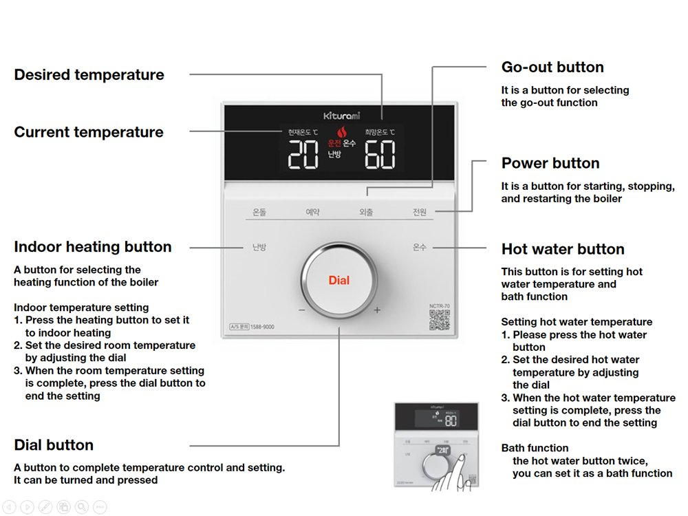
- 온수 온도: 온수 버튼 → 다이얼로 온도 조절 → 다이얼을 눌러 완료Hot water: press the hot water button → turn the dial → press the dial to confirm
- 목욕 기능: 온수 버튼을 두 번 누르세요.Bath mode: press the hot water button twice.
- 실내 난방: 난방 버튼 → 다이얼로 원하는 실내 온도 → 다이얼을 눌러 완료Room heating: press the heating button → turn the dial to the temperature you want → press the dial to confirm
📺 TV · 넷플릭스TV & Netflix
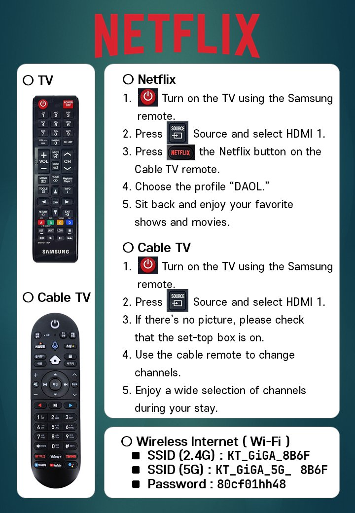
- 삼성 리모컨의 전원 버튼으로 TV를 켜요.Turn on the TV with the Samsung remote.
- Source를 눌러 HDMI 1을 선택해요.Press Source and select HDMI 1.
- 넷플릭스: 케이블 리모컨의 NETFLIX 버튼 → 프로필 “DAOL” 선택Netflix: press NETFLIX on the cable remote → choose the profile “DAOL”
- 케이블 TV: 케이블 리모컨으로 채널을 바꿔요. 화면이 안 나오면 셋톱박스가 켜져 있는지 확인해 주세요.Cable TV: change channels with the cable remote. If there’s no picture, check that the set-top box is on.
🍳 인덕션Induction hotplate
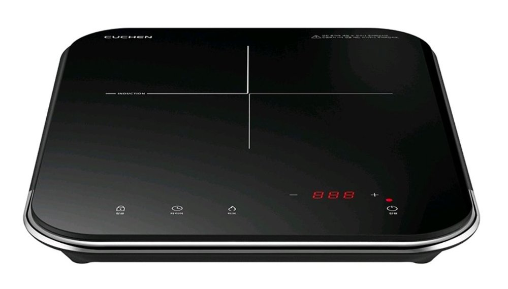
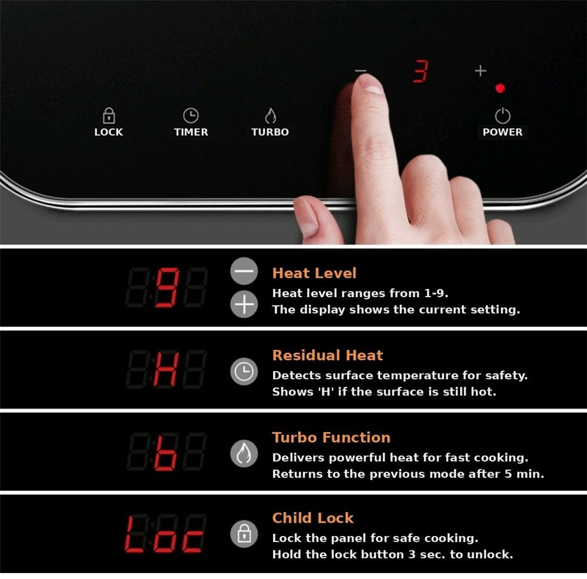
- 평평하고 물기 없는 곳에 두고 220V 콘센트에 꽂아요.Place it on a flat, dry, heat-resistant surface and plug it into a 220V outlet.
- 인덕션용 냄비(자석이 붙는 냄비)를 가운데에 올려요.Put an induction-compatible (magnetic) pot in the center.
- 전원 버튼으로 켜고 + / −로 화력을 조절해요.Press Power, then adjust heat with + / −.
- 다 쓰면 전원을 끄고 플러그를 뽑아 주세요.Turn it off and unplug it when you’re done.
🍲 전자레인지Microwave
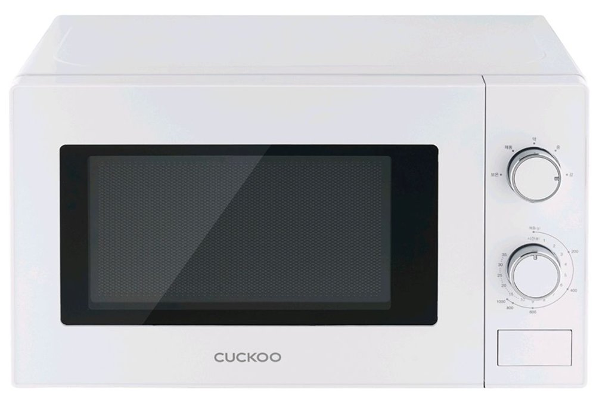
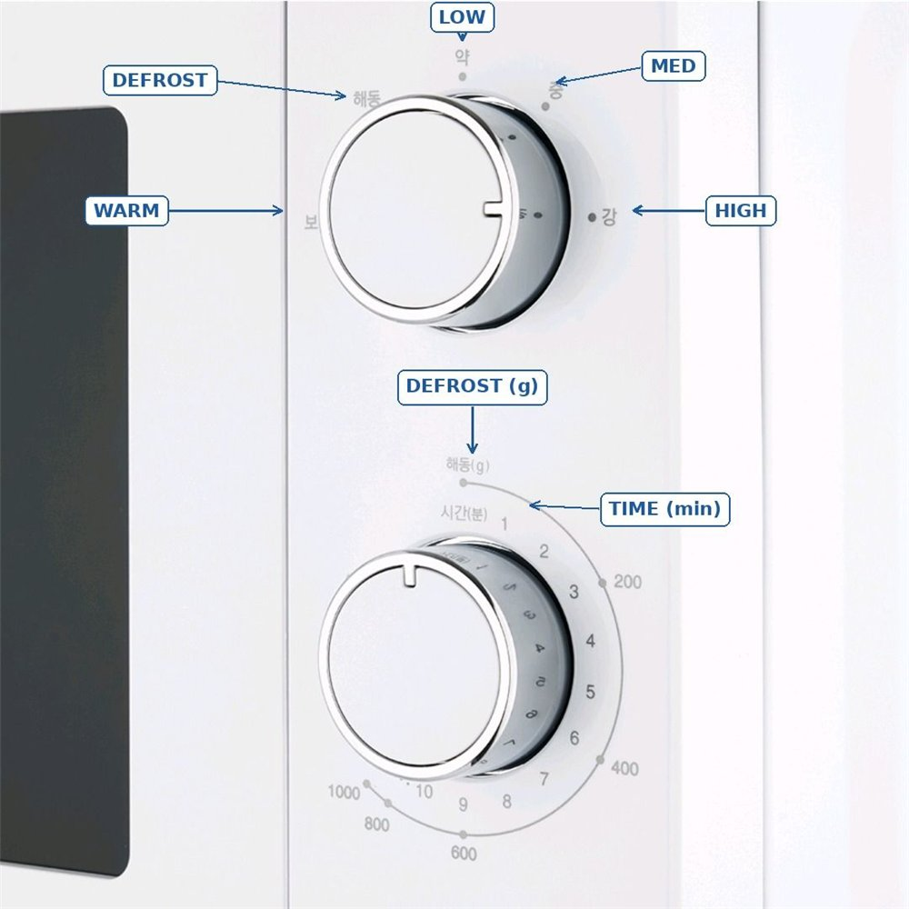
- 음식을 넣고 문을 닫아요.Put your food in and close the door.
- 위쪽 다이얼로 세기를 골라요. 대부분은 HIGH, 냉동식품은 DEFROST.Choose power on the top dial: HIGH for most food, DEFROST for frozen.
- 아래쪽 다이얼을 시계 방향으로 돌려 시간을 맞추면 바로 시작돼요.Turn the bottom dial clockwise to set the minutes; it starts right away.
🧺 세탁기Washing machine
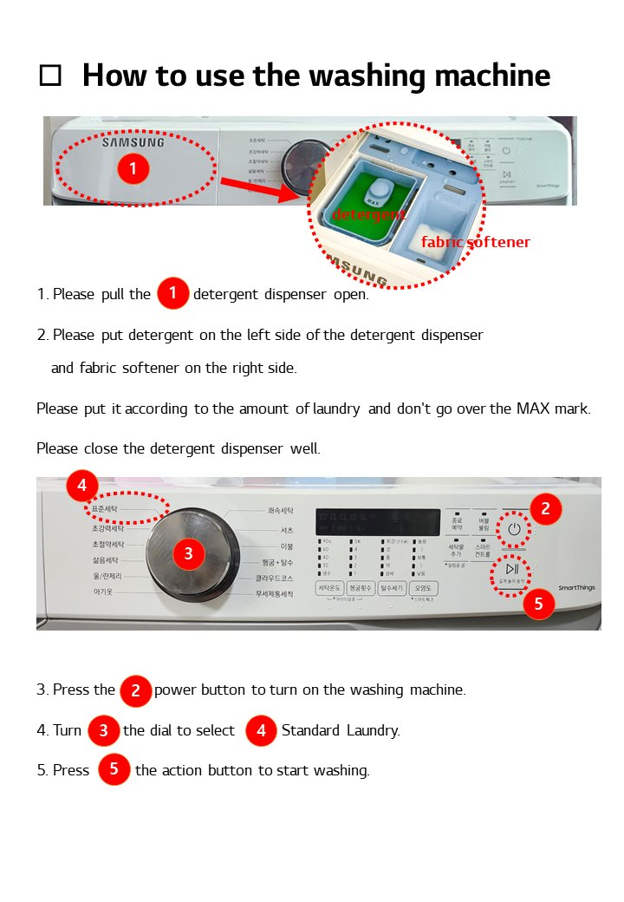
- 세제 투입구를 당겨 열고, 왼쪽에 세제·오른쪽에 섬유유연제를 넣어요. MAX 선을 넘지 않게 넣고 잘 닫아 주세요.Pull out the dispenser: detergent on the left, fabric softener on the right. Don’t go over the MAX line, and close it well.
- 전원 버튼을 눌러요.Press Power.
- 다이얼을 돌려 표준세탁을 선택해요.Turn the dial to Standard (표준세탁).
- 동작/일시정지 버튼을 눌러 시작해요.Press Start/Pause to begin.
🌬️ 건조기Dryer
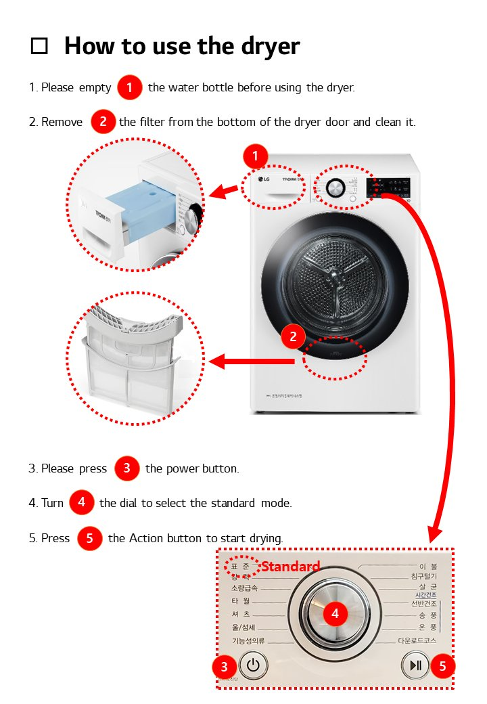
- 쓰기 전에 물통을 비워 주세요.Empty the water tank first.
- 문 아래쪽 필터를 빼서 먼지를 털어 주세요.Pull out the filter at the bottom of the door and clean it.
- 전원 → 다이얼로 표준 선택 → 동작 버튼으로 시작해요.Power → turn the dial to Standard (표준) → press Start.
세탁기와 건조기는 무료로 쓰실 수 있어요.The washer and dryer are free to use.
🗑️ 쓰레기 버리기Waste Disposal
1. 일반 쓰레기1. General waste
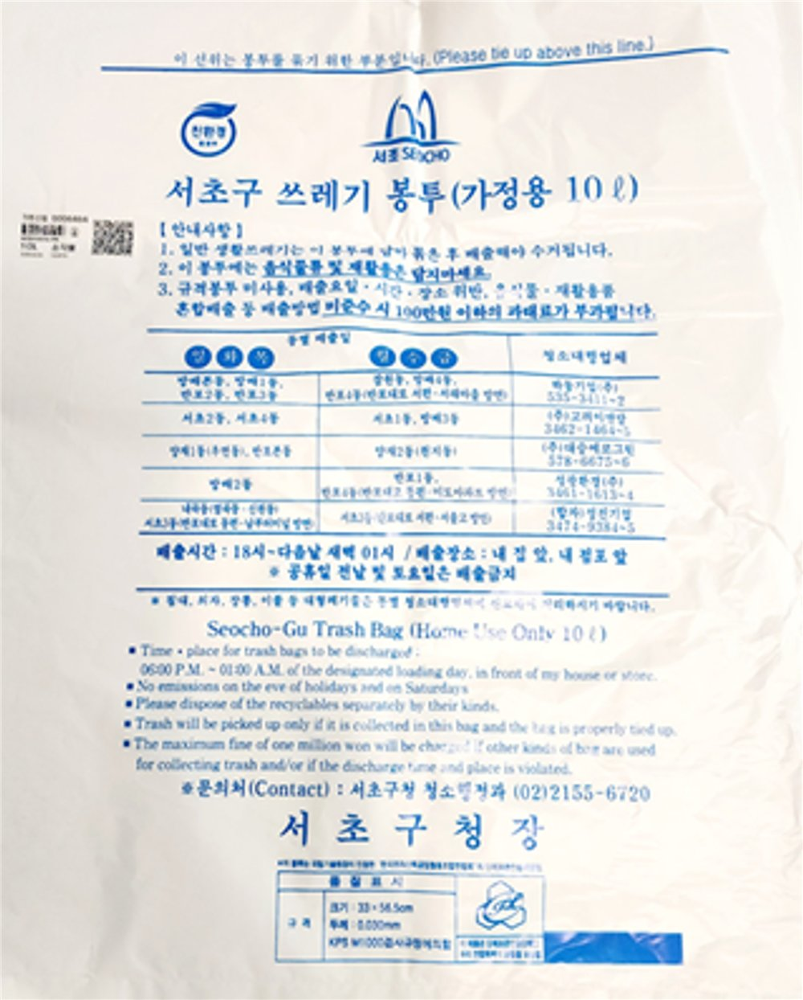
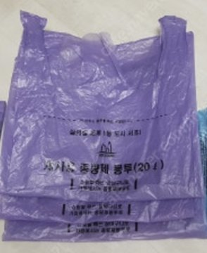
- 일반 쓰레기는 준비된 흰색(10L)·보라색(20L) 종량제 봉투에 넣어 주세요.Put general waste in the white (10L) or purple (20L) bags provided.
- 봉투가 가득 차면 호스트에게 메시지를 보내 주세요.When a bag is full, send the host a message.
2. 음식물 쓰레기2. Food waste
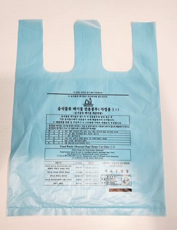
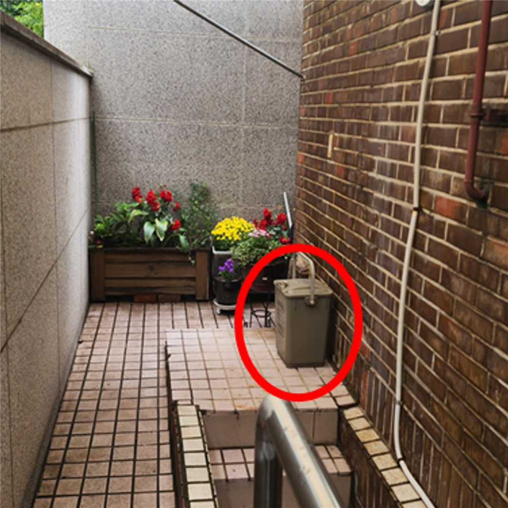
- 물기를 빼고 파란색 봉투에 담아 싱크대에 두세요.Drain the moisture, put it in the blue bag and leave the bag in the sink.
- (선택) 봉투가 가득 차면 1층 입구 화단 옆 회색 통에 넣어 주셔도 돼요.(Optional) When it’s full, you can put it in the gray bin next to the 1F entrance garden.
3. 재활용 · 사용한 수건3. Recycling & used towels
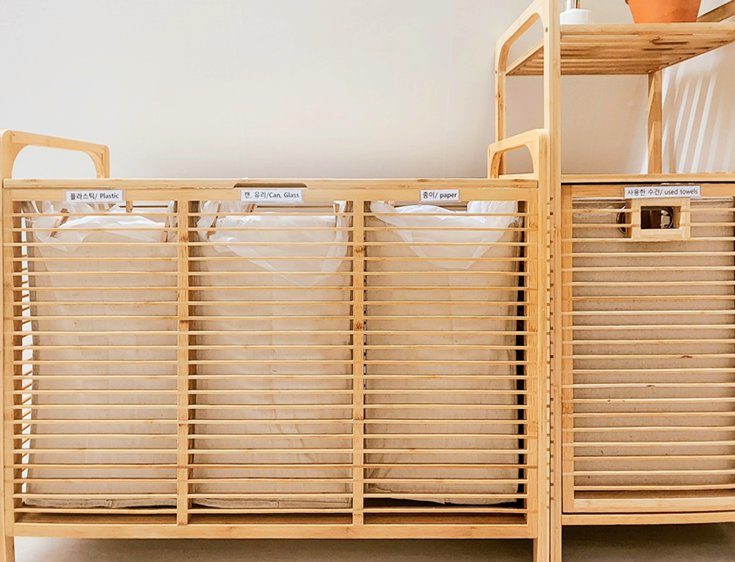
플라스틱, 병 같은 재활용품과 사용한 수건은 이름표가 붙은 바구니에 나눠 넣어 주세요.Sort plastics, bottles and other recyclables, plus used towels, into the labeled baskets.
🧴 비품 · 시설Supplies & Amenities
생활Household
- Wi-Fi, 50인치 TV (넷플릭스)Wi-Fi, 50-inch TV with Netflix
- 퀸 침대 2, 싱글 침대 2, 소파베드 12 queen beds, 2 single beds, 1 sofa bed
- 블라인드 · 암막 커튼, 에어컨Blinds & blackout curtains, air conditioners
- 세탁기 · 건조기 · 빨래 건조대, 옷걸이Washer, dryer, drying rack, hangers
- 냉장고, 6인 식탁과 의자Refrigerator, table and chairs for six
주방Kitchen
- 전자레인지, 가스레인지 · 인덕션Microwave, gas stove & induction hotplate
- 냄비 · 프라이팬, 조리도구, 전기밥솥Pots and pans, utensils, rice cooker
- 정수기, 전기주전자, 와인 오프너 · 와인잔Water purifier, electric kettle, wine opener & glasses
욕실 · 화장대Bathroom & vanity
- 수건 1인 2장, 샴푸 · 컨디셔너 · 바디워시, 칫솔 · 치약2 towels per guest, shampoo, conditioner, body wash, toothbrush & toothpaste
- 헤어드라이어, 머리끈, 화장솜, 면봉Hair dryer, hair ties, cotton pads, cotton swabs
여분의 수건과 휴지는 욕실 거울 뒤 선반에 있어요.Extra towels and toilet paper are on the shelf behind the bathroom mirror.
📋 이용 규칙House Rules
- 조용한 주택가예요. 이웃 민원이 생길 수 있으니 소리에 신경 써 주세요. 밤 10시~아침 8시는 특히 조용히 부탁드려요.This is a quiet residential area and neighbors may complain, so please mind the noise, especially 10 pm–8 am.
- 실내 금연이에요. 파티나 행사는 할 수 없어요.No smoking indoors, and no parties or events.
- 다음 손님을 위해 냄새가 강한 음식은 조리를 삼가 주세요.Please avoid cooking strong-smelling food, for the next guests.
- 벽지·가구·침구·러그에 지워지지 않는 얼룩이 생기거나, 음식물·이물질로 변기가 막히면 별도 배상이 필요할 수 있어요.Irreversible stains on wallpaper, furniture, bedding or rugs, or a toilet clogged by food or objects, may require compensation.
- 다음 손님을 위해 준비해 둔 물품을 쓰면 추가 요금이 생길 수 있어요.Using items set aside for the next guests may incur extra charges.
- 사용한 수건은 세탁기에 넣어 주시면 정말 감사해요 ^^We’d really appreciate used towels going into the washing machine ^^
- 체크아웃 전에 두고 가는 물건이 없는지 한 번 더 확인해 주세요.Before check-out, please check you haven’t left anything behind.
🍽️ 주변 정보Nearby
- 숙소 1층 바리스타 카페A barista café on the ground floor of the building
- 세븐일레븐 도보 2분 · CU 도보 3분 (24시간)7-Eleven 2 min · CU 3 min (both 24 h)
- 롯데프레시 도보 3분 (09:00–23:00, 둘째·넷째 일요일 휴무)Lotte Fresh supermarket 3 min (09:00–23:00, closed 2nd & 4th Sundays)
- 올리브영 (10:00–22:30), 다이소Olive Young (10:00–22:30), Daiso
🚨 비상 연락처Emergency
1330은 영어·중국어·일본어·러시아어로 24시간, 베트남어·태국어·말레이/인도네시아어로 08:00–19:00 안내해요.1330 answers 24/7 in English, Chinese, Japanese and Russian, and 08:00–19:00 in Vietnamese, Thai and Malay/Indonesian.
숙소에는 소화기, 구급상자, 화재경보기, 일산화탄소 경보기가 있어요.The house has a fire extinguisher, first-aid kit, smoke alarm and carbon monoxide alarm.
💡 자주 묻는 질문FAQ
네, 가능해요. 도착 시간을 메시지로 알려 주세요.Yes. Just message us your arrival time.
앞뒤 예약에 따라 달라요. 메시지로 먼저 물어봐 주세요.It depends on other bookings. Please ask us by message first.
네, 원하시면 공항 밴이나 택시를 대신 불러 드려요. 미리 말씀해 주세요.Yes, we can call an airport van or taxi for you. Let us know in advance.
욕실 거울 뒤 선반에 수건과 휴지가 있어요.On the shelf behind the bathroom mirror, with spare toilet paper.
TV를 HDMI 1로 두고 케이블 리모컨의 NETFLIX 버튼 → “DAOL” 프로필이에요. 가전 사용법을 참고하세요.Set the TV to HDMI 1, press NETFLIX on the cable remote and pick the “DAOL” profile. See Appliances.
실내는 금연이에요. 건물 밖에서 이웃에게 방해되지 않게 부탁드려요.Not indoors. Please smoke outside the building, away from the neighbors.
💬 문의하기Need Assistance?
궁금한 점은 Airbnb 또는 Booking.com 메시지로 편하게 연락 주세요.Feel free to contact us via Airbnb or Booking.com message.
급한 경우에는 전화 주세요.For urgent matters, please call.
📞 +82-10-8889-0142